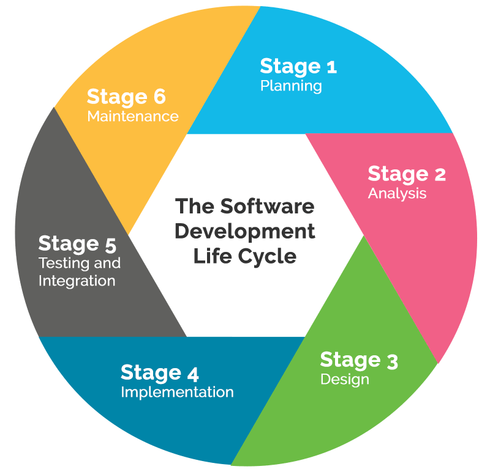

Concept
The concept stage is the stage where you identify the need or problem, gather and analyze data, and create deadlines and a budget. Everyone usually chips in to this part of the cycle.
Inception
This is the stage where developers begin to create the infrastructure and wireframes of the project or system. The design team are usually the ones in charge of this part.
Iteration
This is basically the testing phase of the project, which is when a specific person or group of people selected for the job are sent in to test and attempt to break the game/program.
Release
This is one of the last stages of the cycle, which is when the program is at a point where the developers are comfortable enough to release it to the public.
Maintenance
This is the final important stage of the life cycle, which is also constant whether the program is released or not. It's just as the name says: The developers fix bugs and maintain the program's integrity.
Retirement
This is the final stage of the software development life cycle, in which the developers retire the program in this stage. This is also known as the "death" of the program.